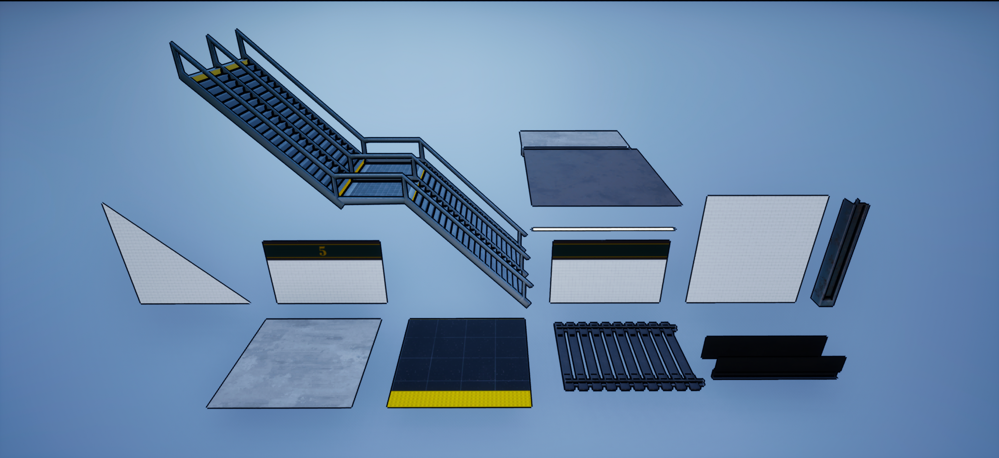
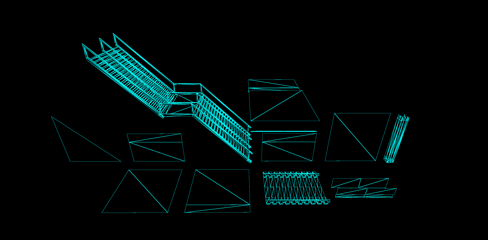
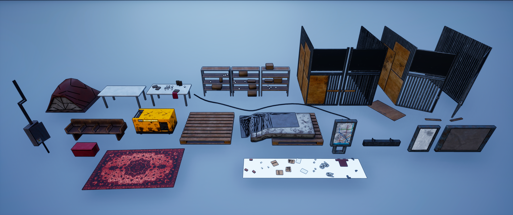
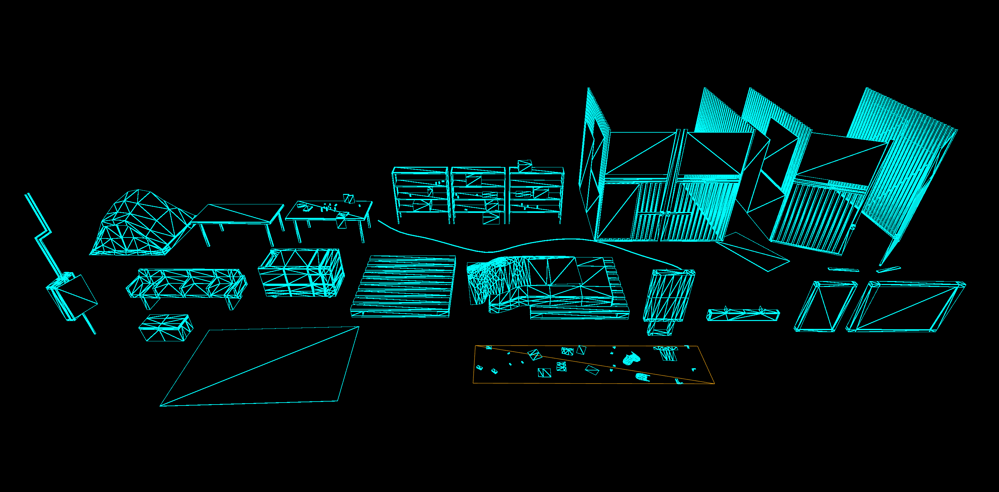

Subway Settlement
The Subway Settlement is an environment that was inhabited by a group of people as a makeshift shelter after some sort of cataclysm. In order to survive they have boarded the gates up and stocked supplies around the space. But with survival comes conflict — and conflict arose. What you're seeing is the aftermath of the space having been looted by another group who broke inside. All that's left is assorted objects and garbage, as well as a generator that was too heavy to bring along. With some power and guesswork, maybe the train could take you somewhere?
Showcase
Cinematic
Hero Asset
Subway Car - Subway Settlement Hero Asset by Stewpified on Sketchfab
Modular & Props
Colored and wireframe renders of the modular kit and prop set used to dress the scene.



